01 / Launch / discover
Announce the product family in a typographic hero and introduce the three object roles.
10 / SELF-DIRECTED COMMERCIAL DESIGN SPECIMEN · 2026
A campaign for the little things between an idea and actually making it.
NODO is a fictional collection of three passive desktop cable organizers. This design study builds a flexible campaign identity across social media, email and product education—showing how a creative idea survives changes in format, density and attention.
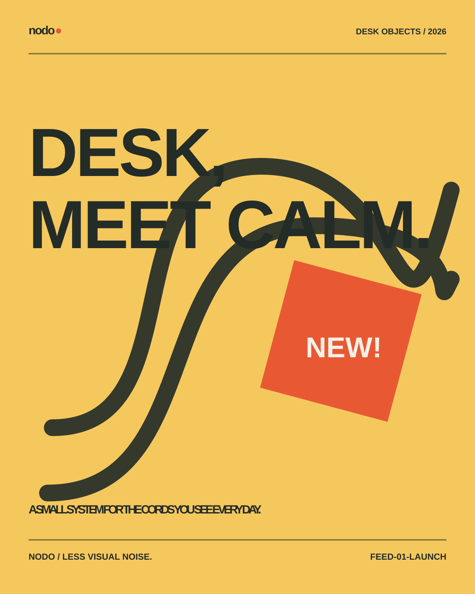
A product line should be understandable before someone needs the fine print.
The imagined launch problem: three small desk accessories could become indistinguishable without clear roles. The visual system must make each object identifiable while keeping the family coherent across marketing channels.
The proposed audience is independent creatives, small studios and people who regularly rearrange their work surfaces. These are **design assumptions**, not validated audience research.
The products, brand, packaging and marketing plan are fictional. No customer interviews, sales, open rates, engagement data, delivery or measured audience outcomes are claimed.
A single continuous line is the recognizable campaign device.
The line evokes a cord without turning the design into a technical diagram. It travels between posters, announcements, vertical stories and packaging art. Enlarged typographic statements create awareness; smaller mono-style labels carry the functional information.
Three starting directions were considered: an understated home-office identity, a strict hardware manual and a bold editorial utility system. The chosen direction combines expressive headline scale with plainly indexed objects. These are internal concept comparisons, not research-tested alternatives.
An email should still communicate when images don't load.
Three differently paced email communications accompany the social campaign: launch, product education, and a non-urgent follow-up. Important headlines, product information and calls to action are live HTML text, with table-based layout, inline CSS, fluid width and Outlook-specific container scaffolding.
The miniatures are approximate browser previews. They do not substitute for screenshots of Outlook, Gmail, Apple Mail or real mobile inboxes. All marketing links are explicit placeholders, not a functioning sales funnel.
Announce the product family in a typographic hero and introduce the three object roles.
Explain the CLIP, WRAP and GUIDE variants with approachable editorial modules.
Offer a non-urgent return to the collection and reinforce the practical campaign promise.
Reusable systems matter when a marketing team needs the next asset by Friday.
Assets are grouped by channel, not mixed into a single folder. SVG masters retain vector structure; email layouts are standalone HTML and include plain-text equivalents; product and print artwork has a separate revision directory and handoff record.
Version labels communicate state rather than prestige: a portfolio source master is not necessarily commercially approved. The case study distinguishes completed artwork from audience and vendor validation still required.
The same line, color and type hierarchy can support attention-grabbing launch art or an informational product panel.
Vertical and landscape artwork was recomposed rather than mechanically cropped. Emails use live content and constrained layouts.
Marketing success, live delivery, email-client QA and social safe-zone compliance remain unverified.
A system that
recomposes.
Composition—not cropping—drives platform adaptation.
Four primary posts introduce the collection; six sequential panels explain the product problem; three vertical stories shift the hierarchy and scale; a landscape composition addresses a professional audience. All artwork is fully inspectable SVG source with editable text and paths.
Dimensions are concept master sizes. Platform placements, safe zones, ad policies and legibility must be checked against live publishing requirements before launch.
The announcement & objects
Four feed-style masters / 1080 × 1350. Each has a distinct focal hierarchy within the same brand grid.
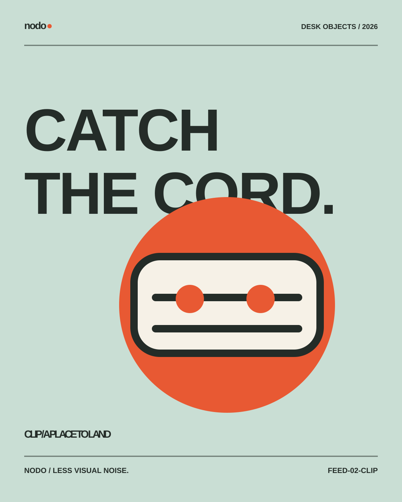
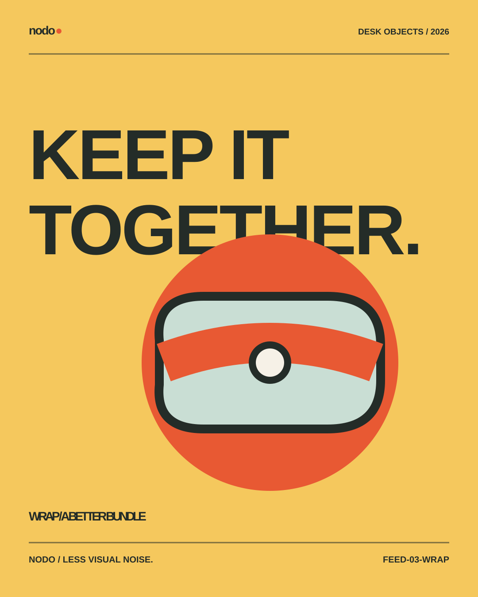
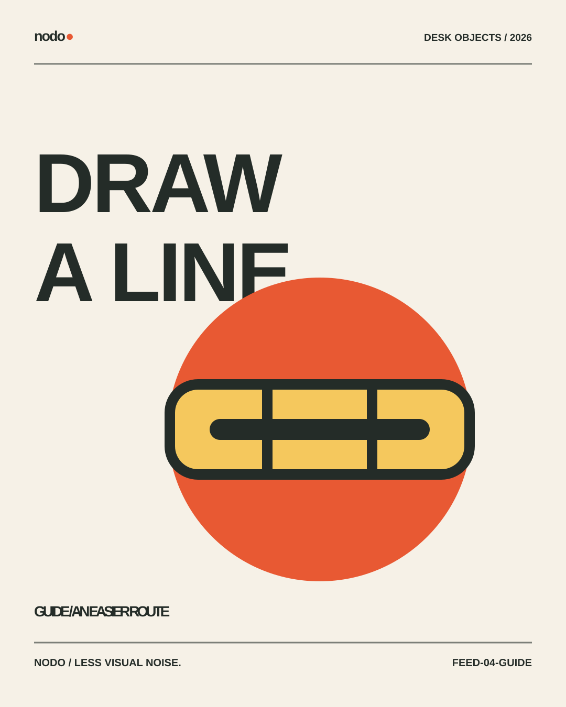
Six frames. One thought.
Carousel concept / 1080 × 1350. Beginning with recognition, moving through the problem, then introducing the three-part system.
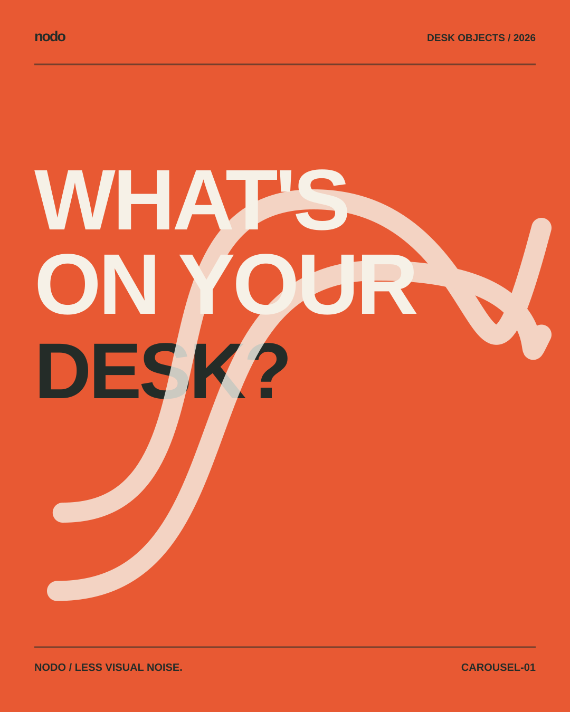
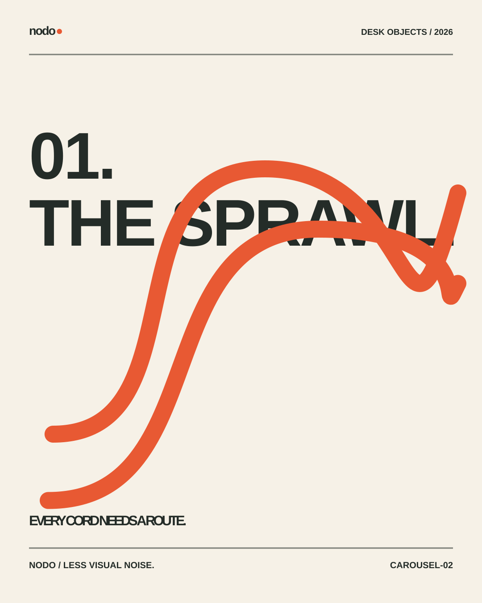
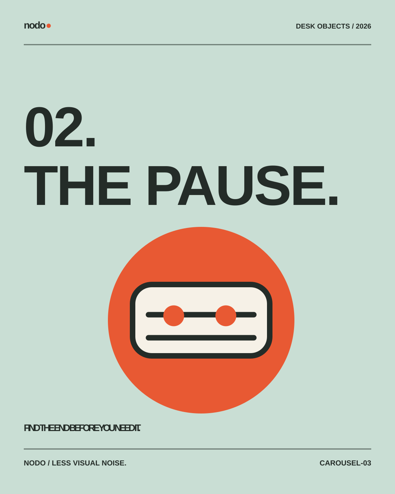
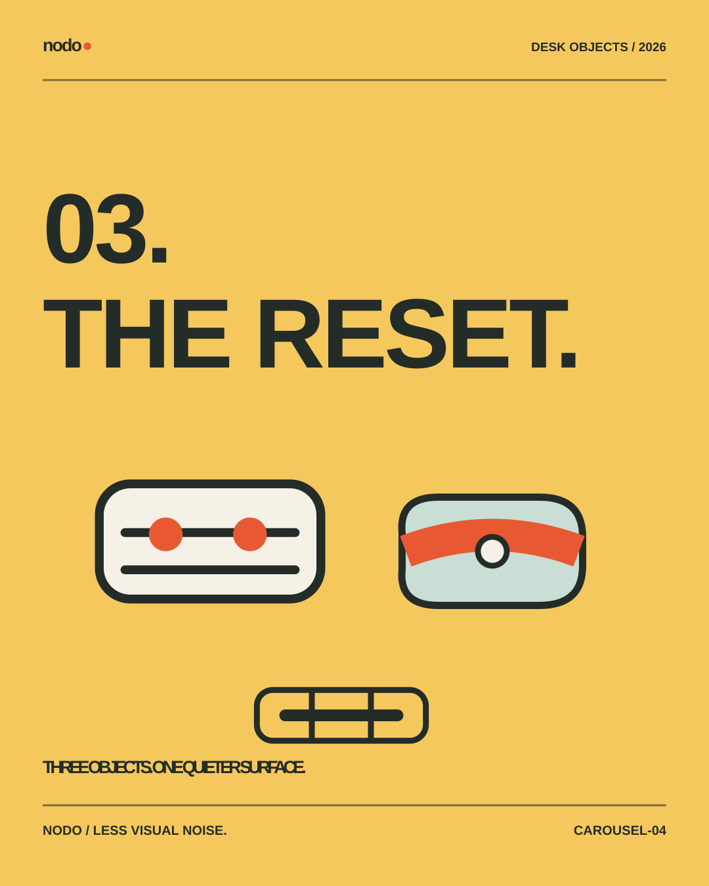
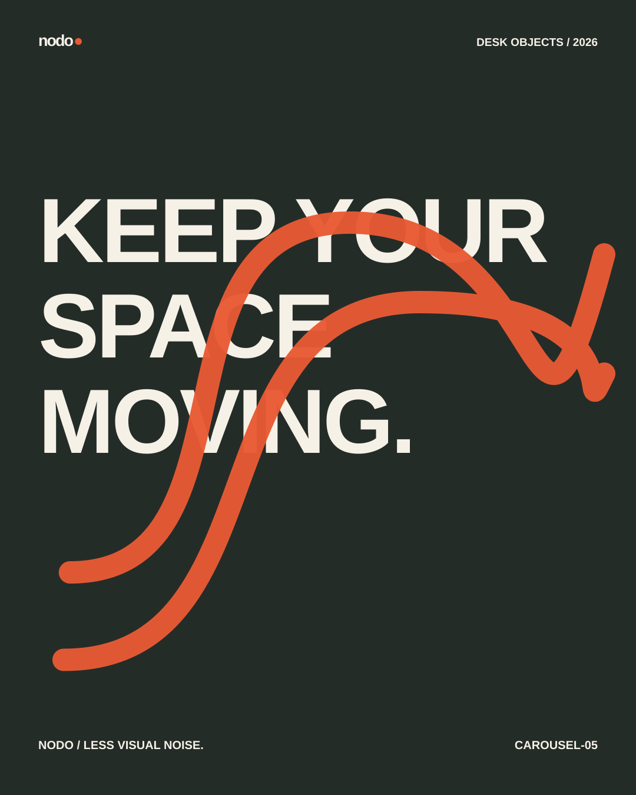
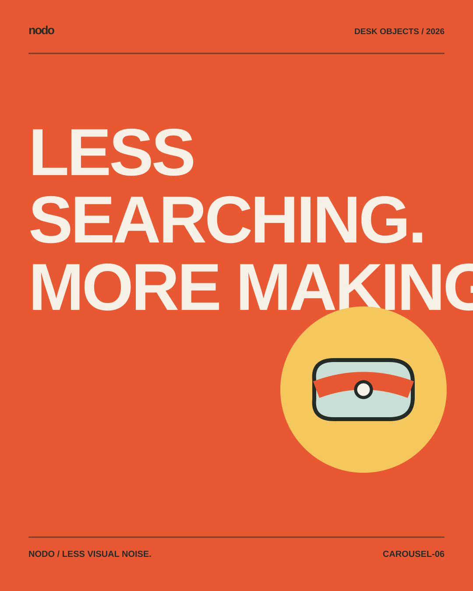
Vertical & landscape
Three deliberately composed 1080 × 1920 stories. Preserve mobile UI safe areas before publishing.
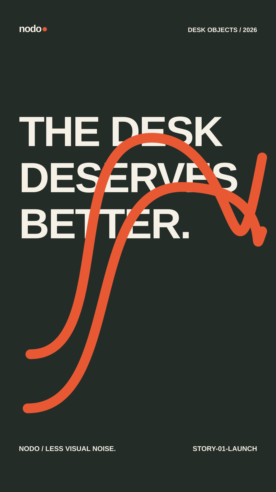
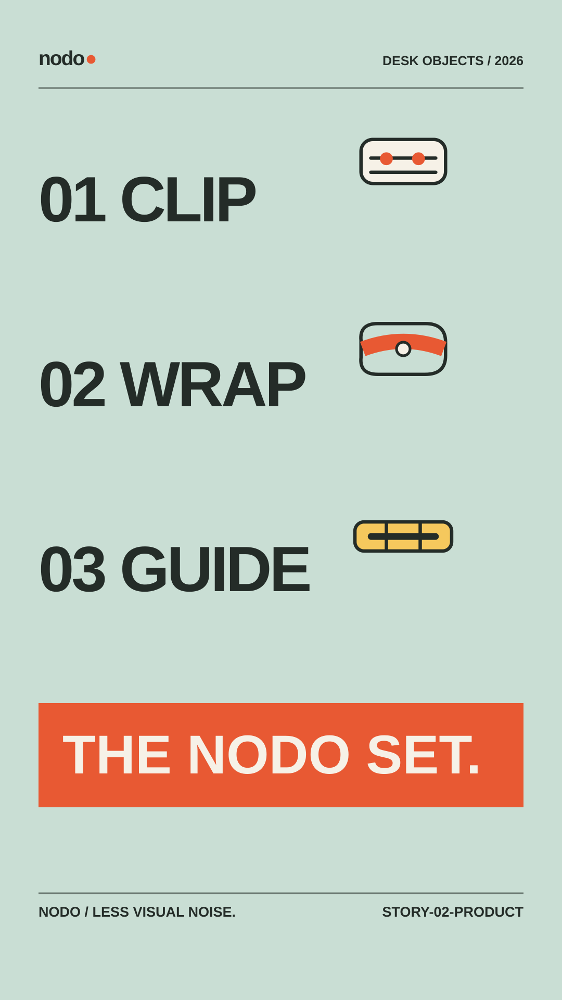
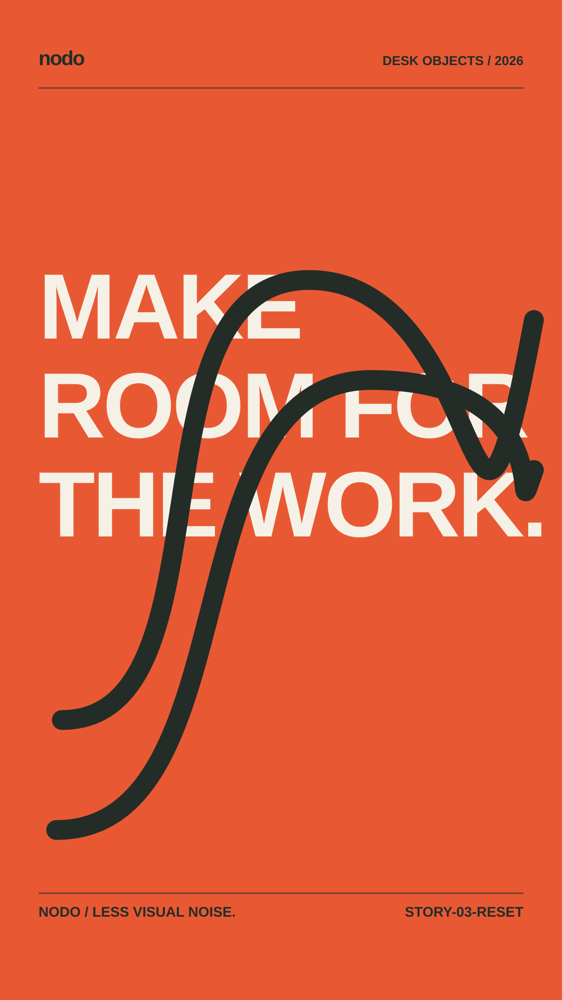
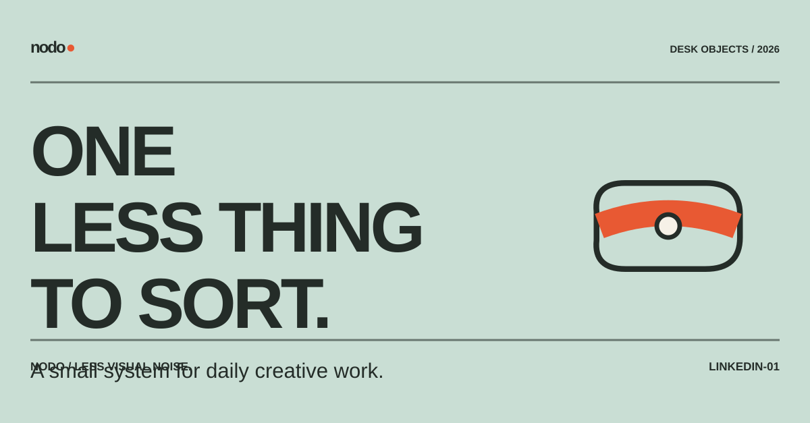